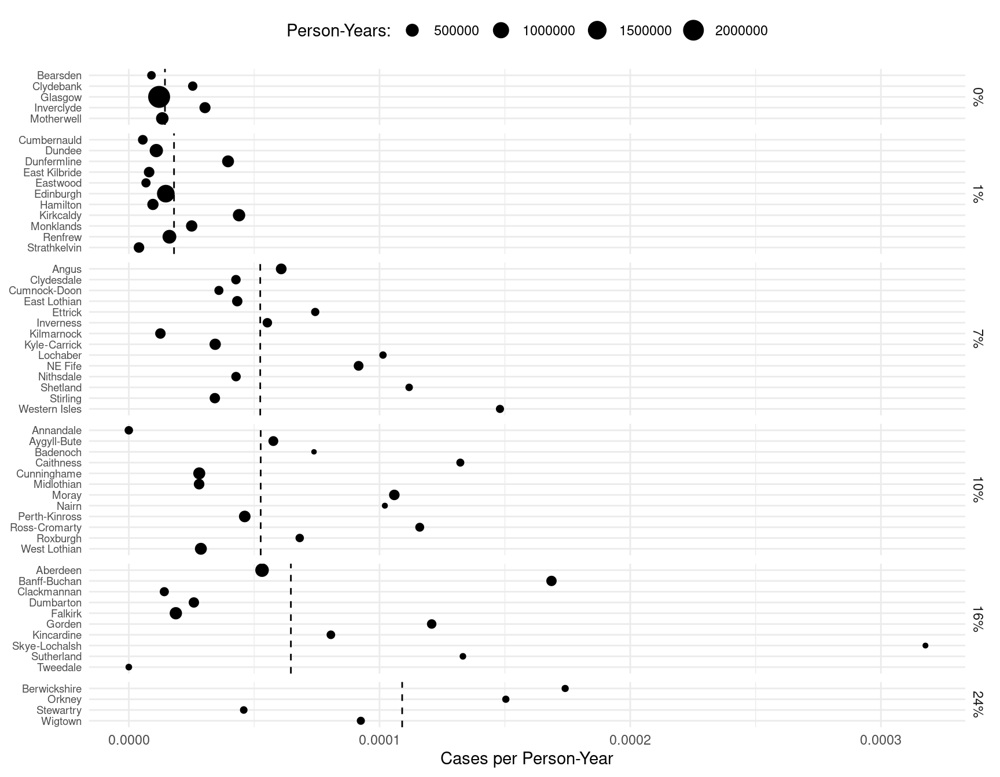
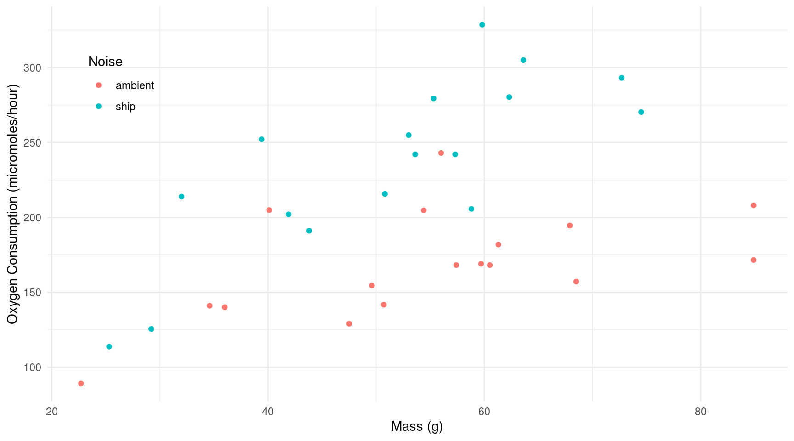
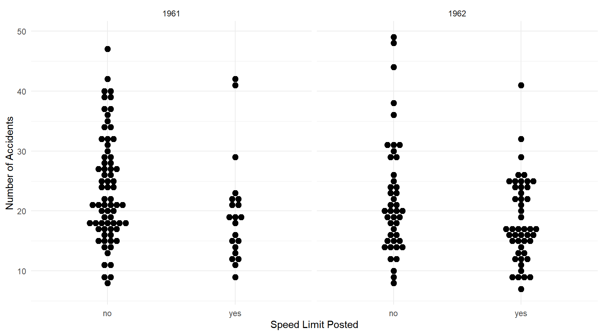

Over-Dispersion, Marginal Effects, the Delta Method, and Survival Analysis
Statistics 516, Homework 4
You can also download a PDF copy of this homework assignment.
The homework assignment concerns over-dispersion, using marginal
effects and the delta method to make inferences, and parametric survival
models. Note that you will need to have the following packages installed
in addition to the usual packages you have been using:
epiR, alr4, isdals,
SMPracticals, and flexsurv. Be warned
that there is a name conflict between the margeff function
from the trtools package, which you will be using in
this homework assignment, and a function of the same name from the
VGAM package which we will be using in lecture. You do
not need to use the VGAM package for this homework
assignment, but if you happen to have it loaded you can avoid problems
by specifying the namespace for the function (e.g.,
trtools::margeff).
Instructions
This assignment is due by 11:59 PM on Monday, April 24th. Email me your homework at trjohns@uidaho.edu. Please submit your homework as a PDF file. Late assignments will be penalized by 10% if turned-in within 12 hours of the deadline, and 10% more for each additional 12 hour interval.
Your solutions must be typed and very neatly organized. I will not try to infer your solutions if they are not clearly presented. Mathematical expressions need not be typeset perfectly but they should be clear. You may substitute letters for symbols (e.g., b1 for \(\beta_1\)) and use other shortcuts for mathematical notation if no meaning is lost.
You must include with your solutions the relevant R output and R code that created them. Be sure that you provide sufficient code that I can replicate your results. Include both the code and the output within the text of your solutions (not in an appendix) using cut-and-paste. Edit your output so as to provide only that which is relevant to answering the questions. Use a monospace font (e.g., Courier or Monoco) for R code and output for clarity. Do not use a monospace font for text that is not R code or output. Do not answers to questions as comments in R code or Rmarkdown. Use the R command
options(digits = 4)(or some other small number of digits) or reduce the font size to avoid having your output “wrap” across multiple lines. Do not include in your solutions the text of the original question or unnecessary code or output.Plots from R Studio can be exported in various formats or directly to the clipboard using the “export” menu in the top-left part of the plot panel.
It is permitted for you to discuss the homework with other students in the course. However your work including R code, output, and written answers must be your own.
You are very welcome to ask me questions. I will be happy to clarify what I am asking in any of the questions and will provide you some help with solving problems by showing you how to work through similar problems from class. I will also be open to helping with any R problems. If you email me with a R question, it will usually be helpful for you to include enough of your R script so that I can replicate your issue. But please avoid saving all your questions for just before the assignment is due. I can usually respond quickly to questions, but I will sometimes need time to respond.
Lip Cancer in Scotland: Over-dispersion
Recall the model for the lip cancer data from Scotland used in the previous homework. Here is the model and a plot of the raw data with the estimated rate of lip cancer per person-year by percent of the population engaged in outdoor activity.
library(epiR)
library(dplyr)
library(ggplot2)
data(epi.SClip)
lipcancer <- epi.SClip %>%
mutate(district = factor(district, levels = rev(sort(unique(district))))) %>%
mutate(percent = paste(prop.ag, "%", sep = "")) %>%
mutate(percent = reorder(percent, prop.ag)) %>%
select(district, cases, population, percent)
m <- glm(cases ~ offset(log(population)) + percent, family = poisson, data = lipcancer)
d <- data.frame(percent = sort(unique(lipcancer$percent)), population = 1)
d$yhat <- predict(m, newdata = d, type = "response")
p <- ggplot(lipcancer, aes(y = district, x = cases/population)) +
theme_minimal() + geom_point(aes(size = population)) +
facet_grid(percent ~ ., scales = "free_y", space = "free_y") +
labs(y = NULL, x = "Cases per Person-Year", size = "Person-Years:") +
scale_x_continuous(labels = scales::label_number()) +
theme(axis.text.y = element_text(size = 7), legend.position = "top") +
geom_vline(aes(xintercept = yhat), data = d, linetype = 2)
plot(p) This model does not account for variation in the lip cancer rate over districts other than that accounted for by the percent of the population engaged in outdoor activity (i.e., two districts with the same or approximately the same percent of the population engaged in outdoor activity may differ in other ways leading to differences in the lip cancer rate). Failing to account for this could lead to over-dispersion, which you will investigate in this problem.
Create an appropriate residual plot to detect over-dispersion, and examine the residual deviance and degrees of freedom for the Poisson regression model. Explain whether or not you see evidence of over-dispersion and why.
Estimate the model specified above using quasi-likelihood by using the argument
family = quasipoisson. This will assume a variance structure of \(\text{Var}(Y_i) = \phi E(Y_i)\) rather than \(\text{Var}(Y_i) = E(Y_i)\) as is assumed when using maximum likelihood with an assumed Poisson distribution for the observed count. Report the parameter estimates and their standard errors using thesummaryfunction. Compare these to the estimates and standard errors obtained previously and briefly discuss what has or has not changed. Finally create an appropriate residual plot and briefly explain if you think the over-dispersion has been successfully resolved and why based on that plot.1In the last homework assignment you were asked to make inferences by estimating the expected number of cases of lip cancer per 100K (i.e., 100,000) person-years, and also the rate ratios comparing the rate of lip cancer at 1%, 7%, 10%, 16%, and 24% versus 0% of the population involved in outdoor activity. Do this again but based on the model you estimated earlier using quasi-likelihood (you do not need to provide interpretations of the rate ratios this time, just report them). Use either
contrastor functions from the emmeans package so that you are also provided with confidence intervals for all of your inferences. Compare these estimates and the associated confidence intervals to what was obtained in the last homework when you did not account for any (potential) over-dispersion, and briefly discuss what has and has not changed.
A Von Bertalanffy Model for Walleye Growth
The Von Bertalanffy model is frequently used to model growth in animals. The parameters of this model are frequently estimated using nonlinear regression. One form of this model is \[ E(Y) = \alpha + (\delta - \alpha)2^{-x/\gamma}, \] where \(Y\) is some measure of size and \(x\) is age. The parameters are the asymptote of expected size as age increases (\(\alpha\)), the “intercept” meaning the expected size at age zero (\(\delta\)), and the “half-life” which is age at which the expected size is half way between \(\delta\) and \(\alpha\) (\(\gamma\)). An example of using this model was shown in lecture on February 10 that featured data on Walleye (Sander vitreus) from Butternut Lake, Wisconsin, during three different periods.2 Here is a plot of the data.
library(alr4)
library(ggplot2)
walleye$periodf <- factor(walleye$period, levels = 1:3,
labels = c("pre-1991", "1991-1996", "1997-2000"))
p <- ggplot(walleye, aes(y = length, x = age)) + facet_wrap(~ periodf) +
theme_minimal() + geom_point(alpha = 0.25, size = 0.5) +
labs(x = "Age (years)", y = "Length (mm)",
title = "Length and Age of Walleye During Three Management Periods",
subtitle = "Butternut Lake, Wisconsin")
plot(p) In that lecture a regression model was featured where the \(\alpha\) and \(\gamma\) parameters could vary over period. This model can be written as \[ E(L_i) = \begin{cases} \alpha_1 + (\delta - \alpha_1)2^{-a_i/\gamma_1}, & \text{if the $i$-th observation is from the pre-1991 period}, \\ \alpha_2 + (\delta - \alpha_2)2^{-a_i/\gamma_2}, & \text{if the $i$-th observation is from the 1991-1996 period}, \\ \alpha_3 + (\delta - \alpha_3)2^{-a_i/\gamma_3}, & \text{if the $i$-th observation is from the 1997-2000 period}, \end{cases} \] where \(L_i\) and \(a_i\) are the length and age of the \(i\)-th observation, respectively. The lecture featured some methods of making inferences for this model. Here you will estimate marginal effects and use the delta method for making the same or other inferences.
Estimate the nonlinear regression model described above. Note that you can refer to the lecture notes from that lecture for code to do this. Give the parameter estimates using
summaryto verify that you estimated the model correctly (you should get the same results as were given in lecture).In lecture I showed how to use the
linconfunction to estimate \(\alpha_2 - \alpha_1\), \(\alpha_3 - \alpha_1\), \(\gamma_2 - \gamma_1\), and \(\gamma_3 - \gamma_1\). These inferences may be useful if one wants to compare the asymptote and half-life parameters between the first period and the two latter periods. These are linear functions of the model parameters (which is why we can use thelinconfunction). But you can also apply the delta method here which reduces to the same calculations as those used bylinconsince these quantities are linear functions of the model parameters (i.e., no linear approximation is necessary). And an advantage of usingdmethodis that the interface may be a bit more intuitive since it does not require specifying coefficients. Use thedmethodfunction to produce estimates, standard errors, confidence intervals, and tests (that the quantity equals zero) for each of the four differences above. If you do this correctly you should get the same results as those given bylinconin lecture.Suppose we want to estimate the increase in the expected length between an age of zero and an age of ten years for a given period. And also suppose we want to estimate the difference in the expected length at an age of ten years between the third and the first period, and also between the second and the first period. These five quantities are all examples of discrete marginal effects. Estimate these marginal effects using the
margefffunction.The instantaneous marginal effect for age is the rate of growth at a given age (i.e., how fast are the walleye growing per unit of age at that particular age). Note that because of the shape of the curves the instantaneous marginal effect is positive, but decreases with age (i.e., older walleye grow slower than younger walleye). Use the
margefffunction to estimate the instantaneous marginal effect for each period at ages of zero, one, and ten years.The instantaneous marginal effect can be written as \[ \frac{(\alpha_j-\delta)2^{-a/\gamma_j}\log(2)}{\gamma_j}, \] where \(a\) is the age at which the effect is computed, and the parameters \(\alpha\) and \(\gamma\) have a \(j\) index corresponding to the period (i.e., \(j = 1, 2, 3\)).3 You can use the
margefffunction to estimate the instantaneous marginal effect like you did in the previous problem, but that function is just an easier interface to the code underlying thedmethodfunction. Use thedmethodfunction to estimate the instantaneous marginal effect for each period at an age of one year. You should get (nearly) the same results as you got in the previous problem when using themargefffunction.In the previous problem you estimated the instantaneous marginal effect at an age of one year for each period. Now suppose you want to compare these effects between the periods. Specifically suppose you want to compare the effect during the first period to that during the second and third periods. Use the
dmethodfunction to estimate the difference in the instantaneous marginal effect at an age of one year between the first and second period, and also between the first and third period. Note: This problem is extra credit for students in Stat 436, but required for students in Stat 516.
Estimating the Michaelis Constant
A Michaelis-Menten regression model has the form \[ E(R_i) = \frac{\alpha s_i}{\lambda + s_i}, \] where \(R_i\) and \(s_i\) are the \(i\)-th observations of the expected reaction rate and the substrate concentration, respectively, \(\alpha\) is the asymptote parameter (i.e., the limit of expected reaction rate as \(s\) increases), and \(\lambda\) is the “half-life” parameter which gives the substrate concentration where the expected reaction rate is half way between zero and \(\alpha\). The \(\lambda\) parameter is sometimes called the Michaelis constant and is often a parameter of interest.
In the second homework assignment there was a problem where the Michaelis constant was modeled as a function of the concentration of an inhibitor for the following data.
library(isdals)
data(inhibitor)
library(ggplot2)
p <- ggplot(inhibitor, aes(x = Sconc, y = RR)) +
theme_minimal() + geom_point() +
facet_wrap(~Iconc, labeller = label_both) +
labs(x = "Substrate Concentration (micro moles)",
y = "Reaction Rate (units unknown)")
plot(p) The model was \[
E(R_i) = \frac{\alpha s_i}{\lambda_0(1 + h_i/\kappa) + s_i},
\] where \(h_i\) is the
inhibitor concentration, \(\lambda_0\)
is a parameter that is the value of the Michaelis constant when the
inhibitor concentration is zero, and \(\kappa\) is a parameter which can be
interpreted as the inhibitor concentration necessary to double the
Michaelis constant. Note that the model can alternatively be written as
\[
E(R_i) = \frac{\alpha s_i}{\lambda_i + s_i},
\] where \(\lambda_i = \lambda_0(1 +
h_i/\kappa)\) to emphasize how this is simply a Michaelis-Menten
model where the Michaelis constant is allowed to vary as a function of
the inhibitor concentration.
The model was \[
E(R_i) = \frac{\alpha s_i}{\lambda_0(1 + h_i/\kappa) + s_i},
\] where \(h_i\) is the
inhibitor concentration, \(\lambda_0\)
is a parameter that is the value of the Michaelis constant when the
inhibitor concentration is zero, and \(\kappa\) is a parameter which can be
interpreted as the inhibitor concentration necessary to double the
Michaelis constant. Note that the model can alternatively be written as
\[
E(R_i) = \frac{\alpha s_i}{\lambda_i + s_i},
\] where \(\lambda_i = \lambda_0(1 +
h_i/\kappa)\) to emphasize how this is simply a Michaelis-Menten
model where the Michaelis constant is allowed to vary as a function of
the inhibitor concentration.
Estimate the nonlinear regression model described above. Note that you can refer to the solutions for the second homework for code to do this. Give the parameter estimates using summary to verify that you estimated the model correctly (you should get the same results as were given in the solutions in the second homework assignment).
We can write the Michaelis constant as a nonlinear function of the model parameters: \(\lambda_h = \lambda_0(1 + h/\kappa)\), where \(\lambda_h\) denotes the value of the Michaelis constant when the inhibitor concentration is \(h\). Use the delta method to estimate \(\lambda_0\), \(\lambda_{25}\), and \(\lambda_{50}\) (i.e., the values of the Michaelis constant when the inhibitor concentration is 0, 25, and 50 micro moles).
Consider an alternative parameterization of the model such that \[ E(R_i) = \frac{\alpha s_i}{\lambda_0 + \delta h_i + s_i}. \] This model can also be written as \[ E(R_i) = \frac{\alpha s_i}{\lambda_i + s_i}, \] where \(\lambda_i = \lambda_0 + \delta h_i\). So here the Michaelis constant for a given inhibitor concentration can be written as a linear function of the model parameters: \(\lambda_h = \lambda_0 + \delta h\). The parameter \(\delta\) is the rate of change in the Michaelis constant per unit increase in the inhibitor concentration. Estimate this model, noting that for a starting value for \(\delta\) you can use the relationship between the two parameterizations that \(\delta = \lambda_0/\kappa\) and compute a starting value for \(\delta\) from estimates of \(\lambda_0\) and \(\kappa\) from the previous model. Next compute estimates of \(\lambda_0\), \(\lambda_{25}\), and \(\lambda_{50}\) like you did in the previous problem but with this alternative parameterization two ways: once using the
dmethodfunction like before, and again by using thelinconfunction since now \(\lambda_h\) is now a linear function of the model parameters. Note that you should get the same estimates and standard errors with each approach from this model usingdmethodandlincon, and the same estimates and nearly the same standard errors as in the previous problem where you estimated these quantities.4Consider the previous problem where you estimated \(\lambda_0\), \(\lambda_{25}\), and \(\lambda_{50}\). Now suppose you want to estimate the differences between these parameter — i.e., \(\lambda_{25} - \lambda_0\), \(\lambda_{50} - \lambda_{25}\), and \(\lambda_{50} - \lambda_0\). That is, how much larger (or smaller) is the Michaelis parameter at one inhibitor concentration versus another. Use either the
dmethodorlinconfunction to estimate these three quantities (note that to uselinconyou will need to use the parameterization in the previous problem, butdmethodcan be applied to either parameterization). Note: This problem is extra credit for students in Stat 436, but required for students in Stat 516.Consider the problem of making inferences concerning the expected reaction rate for given substrate and inhibitor concentrations – i.e., \(E(R)\) for given values of \(h\) and \(s\) where \[ E(R) = \frac{\alpha s}{\lambda_0(1 + h/\kappa) + s} \] if you use the first parameterization, or \[ E(R) = \frac{\alpha s}{\lambda_0 + \delta h + s} \] if you use the second parameterization. The estimate of this quantity is what you get when you use the
predictfunction such as when making a plot. For a nonlinear regression model this quantity is, by definition, a nonlinear function of the model parameters. But for a nonlinear regression model estimated usingnls, thepredictfunction does not provide a standard error, which can be used to construct a confidence interval. For a linear model the calculations of the standard error are relatively straight forward, but this is not the case for a nonlinear model. But the standard error can be approximated using the delta method. Thenlsintfunction in the trtools package does this. Here is how to use it if you wanted to estimate the expected reaction rate for a substrate concentration of 200 and inhibitor concentrations of 0, 25, and 50 micro moleslibrary(trtools) # for the nlsint function d <- expand.grid(Sconc = 200, Iconc = c(0, 25, 50)) nlsint(m, newdata = d)Note that here
mwould be the model object created by thenlsfunction. Thenlsintis a user-friendly interface to code that is effectively the same as what is used by thedmethodfunction. Use thedmethodfunction to produce estimates, standard errors, and confidence intervals for the expected reaction rates for a substrate concentration of 200 and inhibitor concentrations of 0, 25, and 50 micro moles. If you do this correctly you should get the same results as those returned by thenlsintfunction. Run the code above using thenlsintfunction to verify this.
Spring Failure Data
The data frame springs in the
SMPractials package contains data from an experiment
that investigated the survival of springs under varying degrees of
stress. A total of 60 springs were divided into six groups of ten
springs each, and then each group was subjected to a different level of
stress. The number of cycles of stress were counted until each spring
failed.5
Some of the observations at lower levels of stress are right-censored
because the experiment was terminated before all springs had failed.
Here are the first few observations with a new variable
censored created for plotting purposes (note that the
variable cens is a traditional status variable such that it
assumes a value of one if the observation is not censored).
library(SMPracticals)
springs$censored <- factor(springs$cens, levels = 0:1, labels = c("yes","no"))
head(springs) cycles cens stress censored
1 225 1 950 no
2 171 1 950 no
3 198 1 950 no
4 189 1 950 no
5 189 1 950 no
6 135 1 950 noThe stress variable is stored as a factor which we can
verify with the str function.
str(springs)'data.frame': 60 obs. of 4 variables:
$ cycles : num 225 171 198 189 189 135 162 135 117 162 ...
$ cens : num 1 1 1 1 1 1 1 1 1 1 ...
$ stress : Factor w/ 6 levels "700","750","800",..: 6 6 6 6 6 6 6 6 6 6 ...
$ censored: Factor w/ 2 levels "yes","no": 2 2 2 2 2 2 2 2 2 2 ...The following shows a dot plot of the data with the number of cycles until failure “binned” slightly for display purposes.
library(ggplot2)
p <- ggplot(springs, aes(x = stress, y = cycles)) +
geom_dotplot(aes(fill = censored), binwidth = 200,
binaxis = "y", stackdir = "center", method = "histodot") +
scale_fill_manual(values = c("white", grey(0.65))) +
labs(x = "Stress (newtons per square mm)",
y = "Thousands of Cycles Until Failure", fill = "Censored?") +
theme_minimal() + theme(legend.position = c(0.85, 0.85))
plot(p) Here you will use parametric survival models to model the data to determine how stress is related to survival of springs.
Estimate an accelerated failure time model with stress as the explanatory variable and specifying a Weibull distribution for the thousands of cycles until failure. Note that in this model stress will be treated as a factor because it is stored that way in the data frame. Report the parameter estimates and their standard errors (the appropriate R output is sufficient). For each of the six values of stress considered in the experiment, produce plots of the survival, hazard, and probability density functions with the number of thousands of cycles ranging from 0 to 20000, and also estimate the expected number of thousands of cycles for each of these six stress levels. Write a brief summary that describes the effect of stress at 750, 800, 850, 900, and 950 newtons per square mm versus the lowest stress of 700 newtons per square mm. For example, how much smaller is the survival time at, for example, 750 versus 700 newtons per square mm?
Estimate a Weibull accelerated failure time model like you did in the last problem, but now treating stress as a quantitative explanatory variable. To do this you will need to convert it from a factor to a number. The following creates a new variable
stressxthat is a quantitative version ofstress.6springs$stressx <- as.numeric(as.character(springs$stress))Create plots of the survival, hazard, and probability density functions for the same six values of stress like you did in the previous problem. For your interpretation of the effect of stress in this model, explain by how much time until failure changes if stress is increased by a given amount.
For the model where stress is treated as a categorical variable, report and interpret the hazard ratios comparing the lowest stress condition with the other five conditions. For the model where stress is treated as a quantitative variable, report and interpret the hazard ratio for the effect of an increase in stress.
You cannot use the residual deviance to diagnose if a quasi-likelihood approach is appropriate. It only works when you assume a Poisson or binomial distribution. But the residual plot may exhibit other issues that have not been resolved such as we observed for the model for the fish trawling data in lecture on February 22.↩︎
Source: Weisberg, S. (2014). Applied linear regression (4th edition). Wiley.↩︎
This can be derived as \[ \frac{d}{da} \left[\alpha + (\delta - \alpha)2^{-x/\gamma}\right] = \frac{(\alpha - \delta)2^{-a/\gamma}\log(2)}{\gamma}. \]↩︎
The standard errors can be slightly different due to the fact that the delta method uses an approximation to obtain the standard errors which can differ slightly depending on how the model is parameterized.↩︎
Strictly speaking the number of cycles until failure isn’t the same thing as time until failure. Nevertheless a survival model might still be very useful here. If the cycles were evenly spaced then the number of cycles would be proportional to time, and given that there are so many cycles we can think of a continuous distribution as being a reasonable approximation to the number of cycles, which is a discrete random variable. Also there is nothing in the mathematics of survival models that requires that the response variable be time-to-event. It could be any positive and (approximately) continuous random variable.↩︎
Using something like
as.numeric(cycles$stress)will not in general work because factors levels are stored as integers with character labels associated with them, and will only return those integers. By usingas.characterfirst we create a character variable where the “values” are the original level labels, which in this case are numbers stored as strings. These are then coerced into numbers by usingas.numeric.↩︎